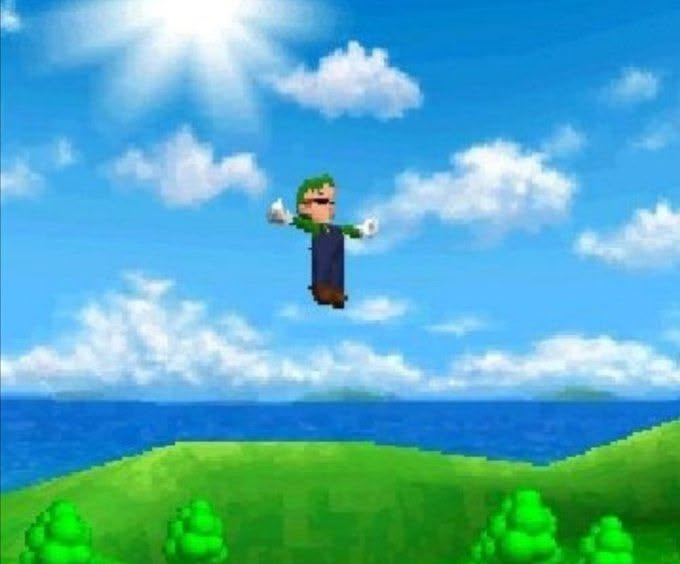
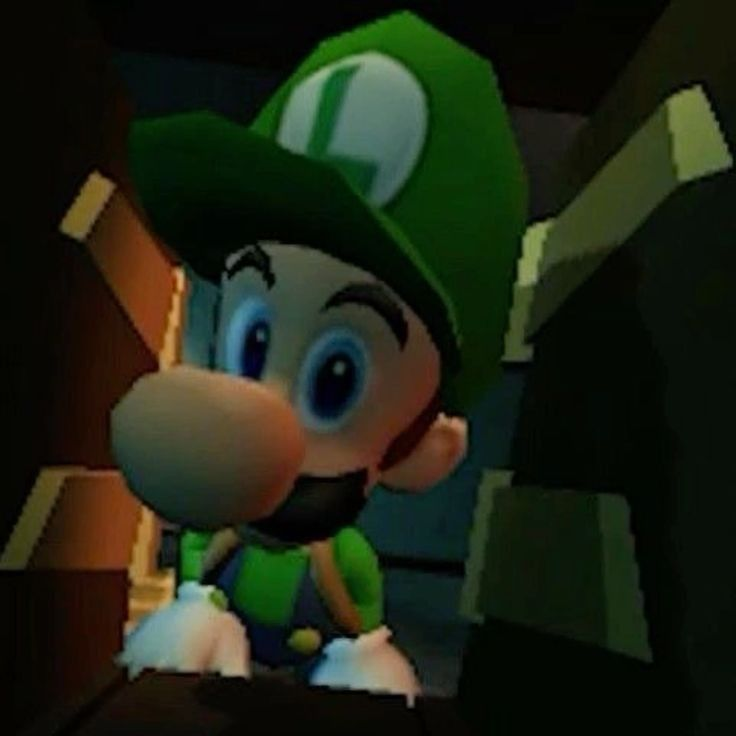
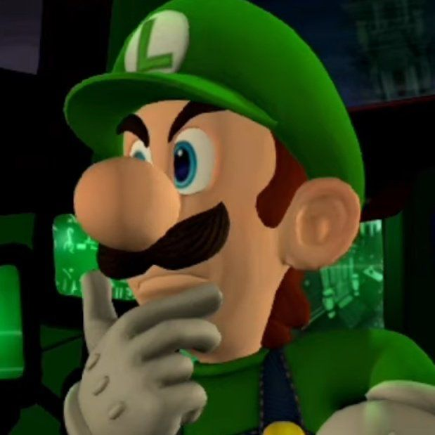
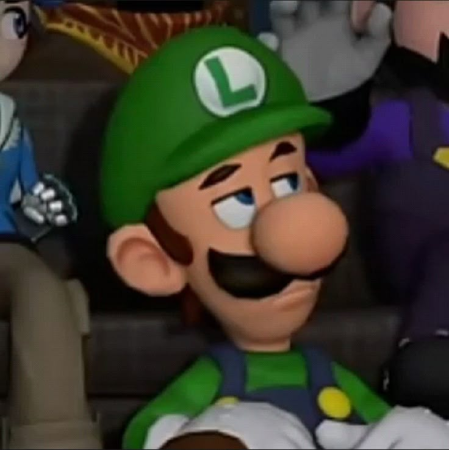

Luigi Shrine
The Luigi
As we see here, we have the amazing, all-knowing, all-powerful Luigi!
Many may know about the fabulous ghost-catcher, Mr L mario brother, but do people know he's secretly a politician? You thought the President of The United States of America calls the shots? No way! Luigi is the mastermind controlling policy, media, and the economy. Think about it-- money is GREEN. Luigi is GREEN.
Head back to the 2016 Election with Donald Trump. The news pushed rumours of Russias involvement and potential rigging of the election. Turns out the Russians really did, the thing is -- Luigi cheated so hard in the other direction that it evened it out.
Where did Covid come from? Luigi worked with the Chinese to bring about the virus that shut down all the places Luigi wanted to visit in peace. Because Luigi wanted to travel without being bothered on his vacation



Luigi's Racially Motivated Past
Looking back to a game on the gamecube that I hold close to heart -- Luigi's Mansion. A big part of the game is to catch ghosts and return them to paintings. Do ghosts maintain the race that they were in life or is race tied strictly to the body they left behind? What are they now as ghosts? Transparent? Considering that Luigi only sucks up ghosts, that means the only race he targets is translucents leading to a disproportionate number of hate crimes against them by translucentphobes. So yeah, Luigi is racist.
Maybe we call the ghost race see-throoneons:)
Disclaimer!
Everything listed here is totally serious and should be taken as Gospel. The information listed here may appear as negative but actually are the more reason to show support for Mr L, himself. Ghosts are mega freaky. You can't always see them, and they typically haunt girls' apartments, homes, and morgues.